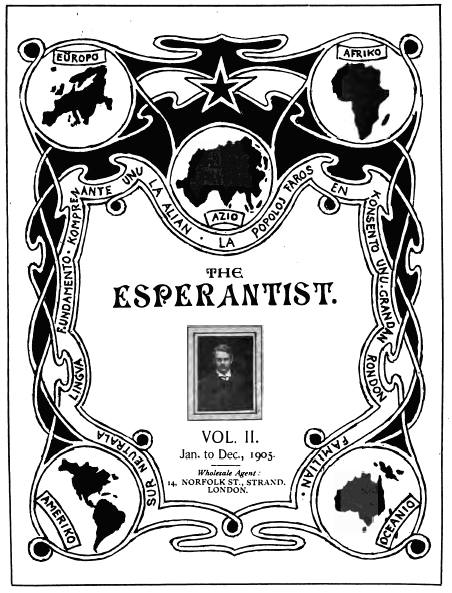

Title: The Esperantist, Complete
Editor: H. Bolingbroke Mudie
Release date: December 6, 2011 [eBook #38240]
Most recently updated: March 13, 2021
Language: English, Esperanto
Credits: Produced by David Starner, Andrew Sly and the Online
Distributed Proofreading Team at http://www.pgdp.net. Music
transcribed by Linda Cantoni. (This book was produced from
scanned images of public domain material from the Google
Print project.)
Transcriber’s Notes
Midi, PDF, and MusicXML files have been provided for the songs in this e-book. To hear a song, click on the [Listen] link. To view it in sheet-music form, click on the [PDF] link. To view MusicXML code for it, click on the [MusicXML] link. All lyrics are set forth in text below the music images. Obvious errors in the notation have been corrected.
A few minor typographical errors have been corrected without notice. However, many grammatical errors and odd spellings have been left as in the original. Some un-indexed items have been added to the indexes.
VOL. I.
Nov., 1903–Dec., 1904.
Wholesale Agent:
14, NORFOLK ST., STRAND,
LONDON.
* Tradukaĵo.
† Dulingva.

VOL. II.
Jan. to Dec., 1905.
Wholesale Agent:
14, NORFOLK ST., STRAND,
LONDON.
* Tradukaĵoj.